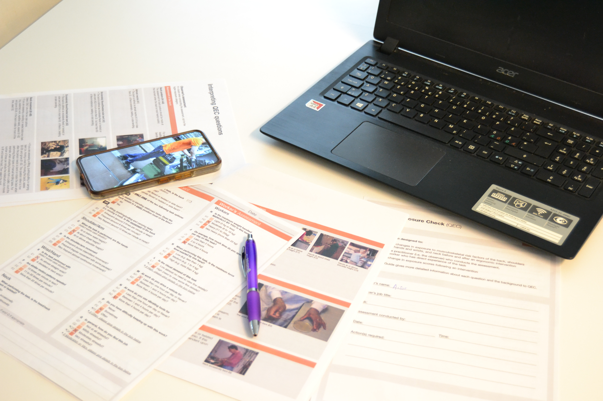

Capture
Film the workstation with any camera — a phone is enough. Upload it to the EasyAI Gallery.
EasyErgo
An open, science-backed ergonomics platform. Standard methods — RULA, REBA, AFF, NIOSH, KIM, QEC — and the room to add the next one, and yours. Built in Sweden so any team can do proper ergonomics, without specialists or special hardware.
Easy + Ergo
The traditional workflow — paper forms, specialist consultants, weeks of waiting — has kept good ergonomic practice out of small shops, fast-changing factories and growing teams. EasyErgo brings the same standard methods to any workplace with a phone and a browser.
How it works
All in the browser. The whole pipeline runs in minutes, not the days a traditional ergonomic study takes — so you can show results in the room, on the same visit.
Film the workstation with any camera — a phone is enough. Upload it to the EasyAI Gallery.
EasyAI rebuilds the worker's full-body posture in 3D, frame by frame. About three minutes per minute of video — fast enough to discuss findings on the spot.
Pick a method, set load and frequency, and get standard risk scores plus per-frame charts and high-risk markers.
Send results to your simulation tool, your PLM or out as a PDF report. OSIM/MOT for OpenSim, MVNX for Xsens, plus JSON, CSV and GLB.
Methodology — open by design
The platform ships with the six most-cited assessments out of the box. The roadmap adds OWAS and RAMP next, and the architecture is built so we can plug in your company's proprietary methods alongside the standard ones — same capture, same workflow, your scoring rules.
Rapid Upper Limb Assessment. Integer score 1–7+. Focused on neck, trunk and upper limbs.
Rapid Entire Body Assessment. Integer score 1–15. Whole-body postural load.
Arm Force Field. Predicts maximum acceptable arm strength via a neural-net model (La Delfa & Potvin, 2017).
NIOSH Lifting Equation. Decimal LI for manual lifting tasks. Two reference postures.
Key Indicator Method (German LASI). Six sub-methods: LHC, PP, MHO, ABP, BF, BM.
Quick Exposure Check. Per-region scores: back, shoulder, wrist, neck, plus driving / vibration / pace / stress.
Two more standard methods landing in the platform — the result classes are sketched, scoring next.
Published research method we don't ship yet? We add it for free. Company-proprietary scoring rule? We build it as a paid custom integration — same dashboard, same API, same exports.
Talk to us →Backed by peer-reviewed research
Every method in EasyErgo — RULA, REBA, AFF, NIOSH, KIM, QEC — comes straight from the published literature, with the source and version stored alongside every result. The platform itself grew out of years of peer-reviewed work in digital human modelling and the optimisation of productivity and worker well-being.
Why teams pick EasyErgo
One minute of video → results in about three. Walk through the findings with the operator on the same visit.
Your data lives on our server in Sweden — GDPR-friendly by default. If you'd rather host it on your own infrastructure, tell us, we're open to that.
One licence, all the videos you need. No per-video fees, no per-seat surprises — predictable cost as you scale up.
Six standard methods today plus a roadmap for OWAS, RAMP, and your company's own scoring rules.
We're with you, not just shipping software
A platform isn't enough if your team is starting from scratch on workplace ergonomics. We onboard you, teach the fundamentals, help you meet local guidelines, and make the business case so leadership sees the return.
We walk your team through the first evaluations on real workstations — capture, scoring, reporting — until it's a routine your people own.
Short, practical training on the methods that matter for your work — RULA, REBA, NIOSH, AFF and the rest — so your team understands the scores, not just sees them.
We help you map your processes to the relevant occupational-health guidelines so you can show the work has been done — and avoid the risks of having ignored it.
We help you measure what redesigning a workstation actually saves — time, sick days, rework, claims — so the investment is easy to defend to finance.
Pose estimation in the browser
Left: the source recording. Right: the full-body 3D pose EasyAI estimated from it — same movement, every joint, fully rotatable. Drag to orbit the model.
Left-drag to orbit · right-drag to pan · scroll to zoom
Why EasyErgo

Paper forms, stopwatch, observation by eye. Hours per workstation. Re-evaluating after a change means starting over.
Every frame scored. High-risk moments surfaced automatically. Re-run any method on the same capture in seconds.
Built to fit your stack
Posture, 3D models, risk scores and full reports flow out in JSON, CSV, GLB and PDF — plus OSIM and MOT for OpenSim biomechanical analysis, and MVNX for Xsens animation pipelines. A REST API connects EasyErgo to your PLM, MES and ERP — no copy-paste.
Open the dashboard or get in touch — we'll help you run your first evaluation.